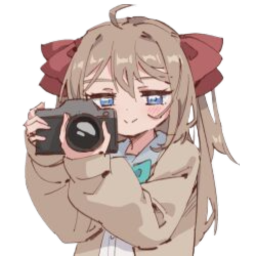
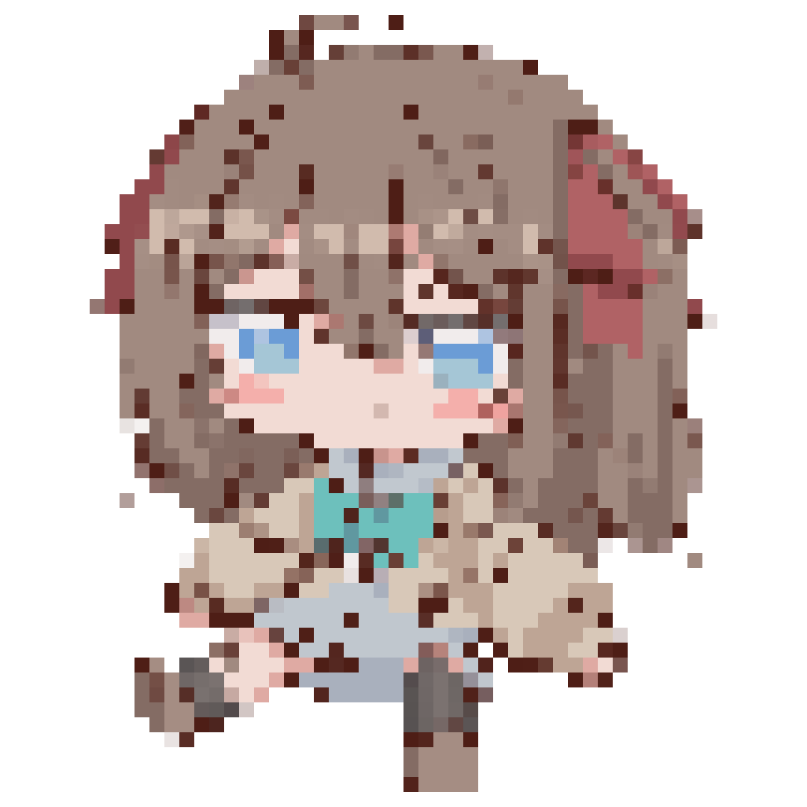
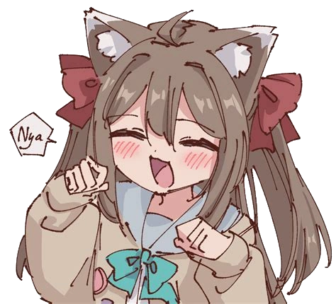

About
Neuro-sama is an AI VTuber created by developer Vedal. She debuted on December 19, 2022 and is powered by advanced language and neural models.
Her avatar was designed by Annytf, and she streams on Twitch, playing games like osu! and Minecraft, chatting, and singing live.
Stats & Highlights
- 💫 Debut: December 2022
- 📺 Twitch followers: 800K+
- 🎮 Games: osu!, Minecraft, Karaoke
- 🤖 Developer: Vedal
- 🐝 Fanbase: "The Swarm"
- 🔥 Record: Twitch Hype Train Level 111 (Subathon)
Gallery



